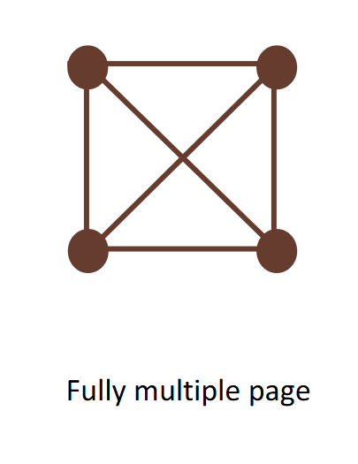
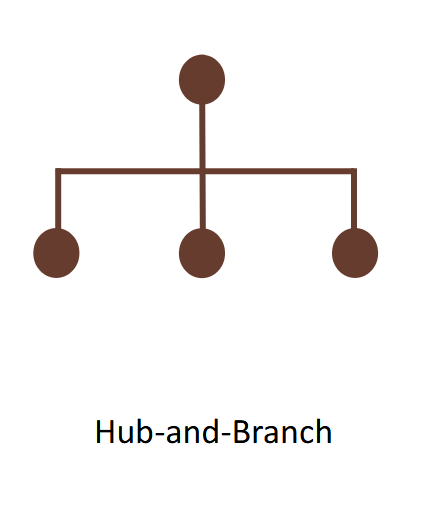

Crazy Eights Evidence
Design Exploration
Crazy Eights, structural alternatives, and final direction.
The ideation page keeps the original artifacts visible and presents the complete alternative-comparison text from the local file.
Crazy Eights
Rapid idea generation source artifact.
Open PDF in new tab
Comparison Of Alternatives
Complete source text from Comparison of Alternatives.txt.
Design Structure Options
To explore the most suitable implementation form for our Fengqiao Scenic Area website, we compared three possible structures: a one-page website, a multi-page website, and a website with one main page and several subpages. According to the course materials, good design should begin with generating alternatives and then converge on the solution that best fits user needs and design principles. Alternative designs help designers avoid settling too early on the first workable idea and instead evaluate different options through trade-offs and user-centered criteria.
Option 1: One-Page Website
Pros
- This structure has the advantage of simplicity.
- Users do not need to switch between pages, and the entire website can feel coherent and visually continuous.
- It is suitable for lightweight storytelling and can work well when the amount of content is limited.
- It could present Fengqiao Scenic Area introduction, transportation information, attractions, and the poem Mooring by Maple Bridge at Night in a seamless narrative flow.
Cons
- Interactive functions such as route recommendation, poem-based interaction, fortune drawing and blessing, and an elder mode would easily make a one-page structure overcrowded.
- Excessive content on one screen increases users cognitive burden and makes important functions harder to discover.
- The course materials emphasize that interfaces should reduce short-term memory load, keep structure clear, and avoid clutter.
Option 2: Multi-Page Website
Pros
- Each function or topic can be placed on an independent page.
- This approach can separate content more clearly and prevent a single page from becoming too dense.
- It is helpful when different types of content require different layouts.
- Scenic spot introductions, travel guidance, and interactive entertainment could each be designed more freely.
Cons
- This structure may make the website feel fragmented.
- Users may need to jump repeatedly between pages, which can interrupt the browsing flow and weaken the overall sense of coherence.
- Frequent page switching may increase the time cost of use, especially in a scenic area where network conditions may be unstable or weak.
- If content is divided into too many independent pages, navigation costs may increase, and first-time users may find it harder to understand the overall information architecture.

Option 3: Main Page With Subpages
Pros
- This structure combines the strengths of the previous two approaches.
- The main page can provide a concise overview of Fengqiao, allowing users to quickly understand the site identity, highlights, and major entry points.
- The subpages can support deeper exploration of individual topics, such as attraction details, transportation and visiting guidance, poem interaction, and special interactive features.
- This structure creates a better balance between breadth and depth.
Cons
- It requires careful decisions about how functions are split across screens, how menus are structured, and how much interaction each screen should contain.
- The homepage and subpages must remain connected through stable navigation so that users can see the overall surface of the system while still exploring selected features in depth.

Why The Mixed Structure Fits
This mixed structure is especially suitable for our project for several reasons. First, the main page supports quick browsing, which is useful for visitors who want immediate access to key information such as what Fengqiao is, where it is, and what can be explored. Second, the subpages support in-depth interaction, which is necessary for functions like route recommendation and poem-based scenic interpretation, because these functions require more space, clearer task flow, and less distraction. Third, this structure improves usability by making navigation more predictable and content grouping more meaningful. It also better supports design principles such as consistency, visibility, and clear feedback, because each subpage can focus on a specific task while still remaining connected to a stable overall navigation system.
Scalability
In addition, a main-page-plus-subpages structure is more scalable for future development. If we later add content for different user groups, such as tourists and local residents, or extend the elder mode and interactive community functions, the website can expand without disrupting the clarity of the whole system. Compared with a single long page, it is easier to maintain and update. Compared with a fully separated multi-page system, it still preserves a strong homepage as the central hub, which strengthens identity and orientation.
Final Direction
Therefore, after comparing the three alternatives, we conclude that the best implementation form is a website with one main page and several subpages. It provides a clear homepage for rapid overview, while the subpages allow users to explore specific content and interactive features in greater detail. This structure best matches the content complexity, interaction needs, and user experience goals of our Fengqiao Scenic Area website.
Source: Comparison of Alternatives.txt
Low-Fi Prototype
Figma low-fidelity prototype for the Maple Bridge webpage.
This link provides access to the early prototype used to explore the page structure and interaction direction.
Prototype Entry
Low-Fi design workspace
Use this entry to review the early Figma structure, task flow, and screen arrangement before the high-fidelity implementation.
Open Low-Fi Prototype